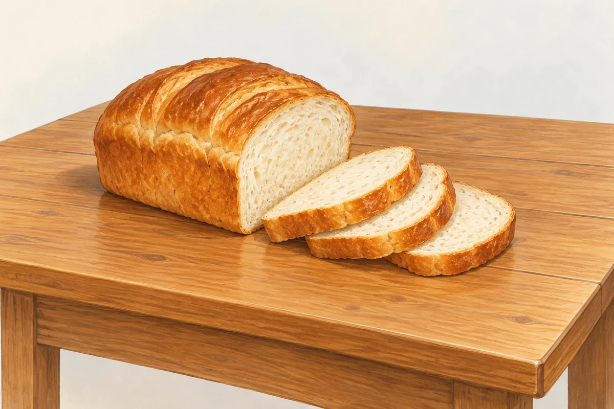
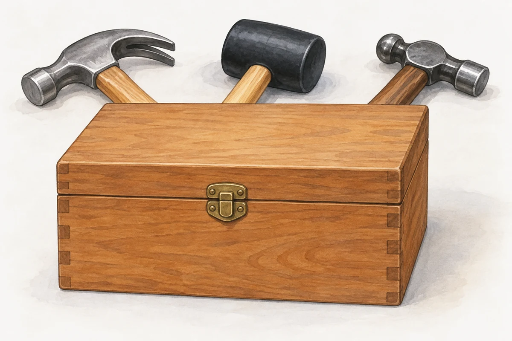
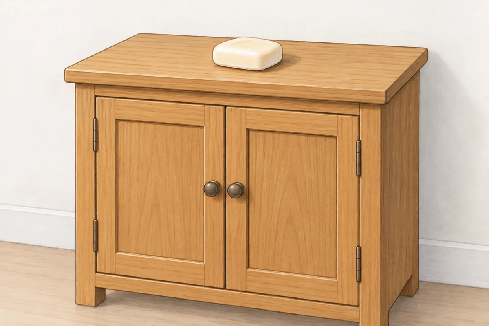
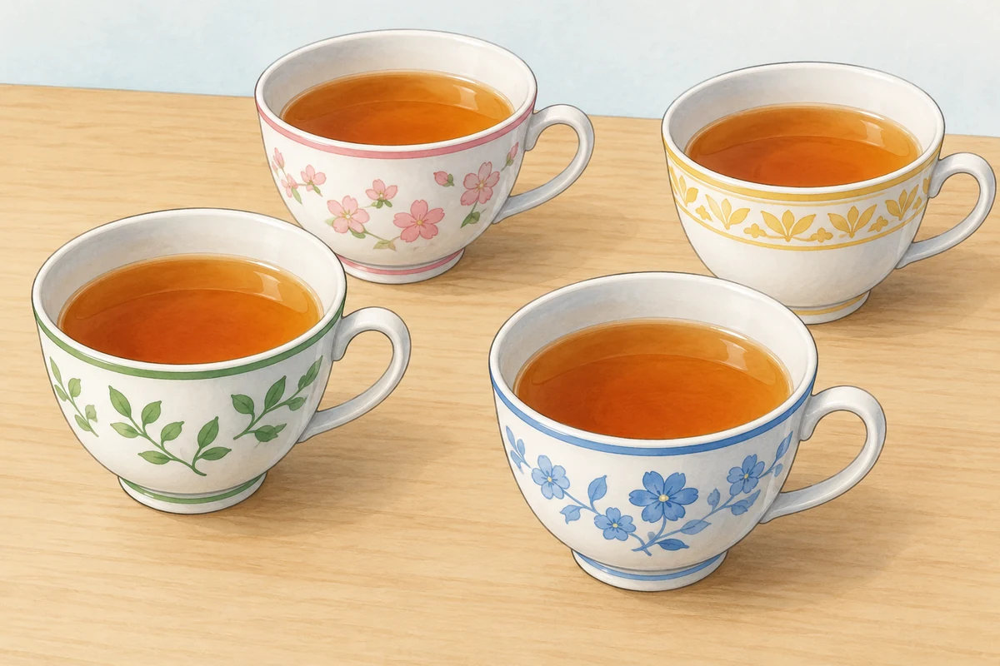
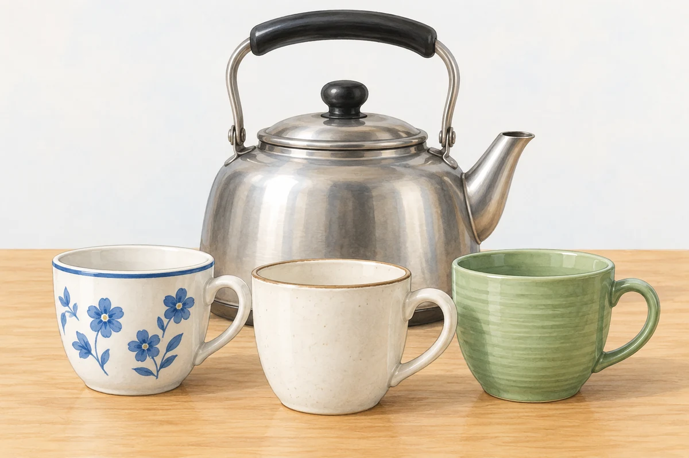
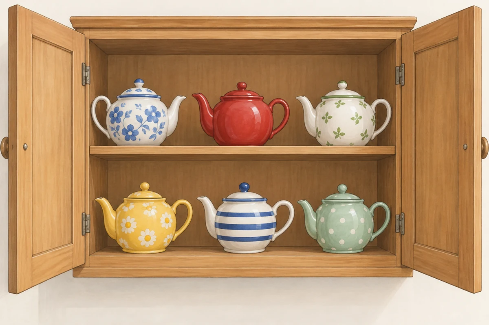

Picture prompts 听录音并回答问题，区分 Are there any …? 和 Is there any …?。 Listen and answer the questions. Use Are there any …? or Is there any …?  Picture 70 70bread on the table  Picture 80 80hammers behind that box Picture 90 90milk in front of the door  Picture 100 100soap on the cupboard Picture 200 200newspapers behind that vase Picture 300 300water in those glasses  Picture 400 400tea in those cups  Picture 500 500cups in front of that kettle Picture 600 600chocolate behind that book  Picture 700 700teapots in the cupboard Picture 800 800cars in front of that building Picture 900 900coffee on the table
Notes on the text 课文注释 01 · Plural nouns glass → glasses；book → books；housewife → housewives。可数名词复数用 are；不可数名词用 is。
Written exercise A · Plural nouns 改写句子，用名词的复数形式填空。 Rewrite these sentences, using the plural forms of the nouns. ExampleI can see some cups. But I can’t see any _____ (glass). I can see some cups, but I can’t see any glasses.Example / 示例 01I can see some spoons, but I can’t see any _____ (knife). 02I can see some hammers, but I can’t see any _____ (box). 03I can see some coffee, but I can’t see any _____ (loaf) of bread. 04I can see some cupboards, but I can’t see any _____ (shelf). 05I can see Mr. Jones and Mr. Brown, but I can’t see their _____ (wife). 06I can see some cups, but I can’t see any _____ (dish). 07I can see some cars, but I can’t see any _____ (bus).
Written exercise B · Questions and answers 模仿例句提问并回答。 Write questions and answers using these words. Example 1bread/on the table Is there any bread here? Yes, there is. There is some on the table.Example / 示例 Example 2hammers/behind that box Are there any hammers here? Yes, there are. There are some behind that box.Example / 示例 01milk/in front of the door 02soap/on the cupboard 03newspapers/behind that vase 04water/in those glasses 05tea/in those cups 06cups/in front of that kettle 07chocolate/behind that book 08teapots/in that cupboard 09cars/in front of that building 10coffee/on the table
A. There is and there are 用 There is 或 There are 填空。 Write in There is or There are. 01_____ some men behind the house. 02_____ some water in the kettle. 03_____ some children in the park. 04_____ some tea in the teapot. 05_____ some knives in the kitchen. 06_____ some lovely flowers in the vase.
B. Questions and answers 模仿例句提问并回答，用 Is there …? 或 Are there …?。 Ask and answer questions like the example. Use Is there …? or Are there …? and there’s or there are. 01sugar / in the cupboard? / on the table Is there any sugar in the cupboard? No, there isn’t, but there’s some on the table.Example / 示例 02cups / on the shelf? / in the cupboard 03milk / in the refrigerator? / behind the teapot 04magazines / behind the television? / on the floor
C. Situations 根据情景写出你应该说的话。 Read the situations. What do you say? 01You and a friend are going out. You are ready, but he or she isn’t. 02You want a friend to make a pot of tea for you. 03You are pointing at something for someone who can’t see it.
I. Make dialogues 仿照例句用所给的词编写对话，每题写三组问答。 Make dialogues using the cues according to the example. Write three question-and-answer pairs. 01you/speak/English/French/German/Sam Can you speak English? Yes, I can. Can you speak French? No, I can’t, but I can speak German. Who can speak French? Sam can speak French.Example / 示例 02Ann/make/tea/bread/coffee/John 03Mike/ride a bike/drive a car/ride a horse/my father 04they/speak/Dutch/Japanese/Korean/Mary 05you/see/any clouds in the sky/a bird/an aeroplane/he 06John/write/his name/his address/his phone number/his brother
II. Prepositions 选择正确的介词填空。 Fill in the blanks with the correct preposition. 01A tall man is sitting _____ (between, in front of) me. 02The boy is hiding _____ (on, behind) a tree. 03There is a garden _____ (behind, between) the house. 04The men are coming _____ (out of, into) the shop. 05Look! The children are _____ (across, on) the bridge. 06Some birds are flying _____ (on, over) the wall. 07Two cats are running _____ (between, along) the wall. 08There is a box _____ (over, on) the table. 09There are two policemen _____ (before, in front of) that building. 10Is there any water _____ (into, in) the kettle?